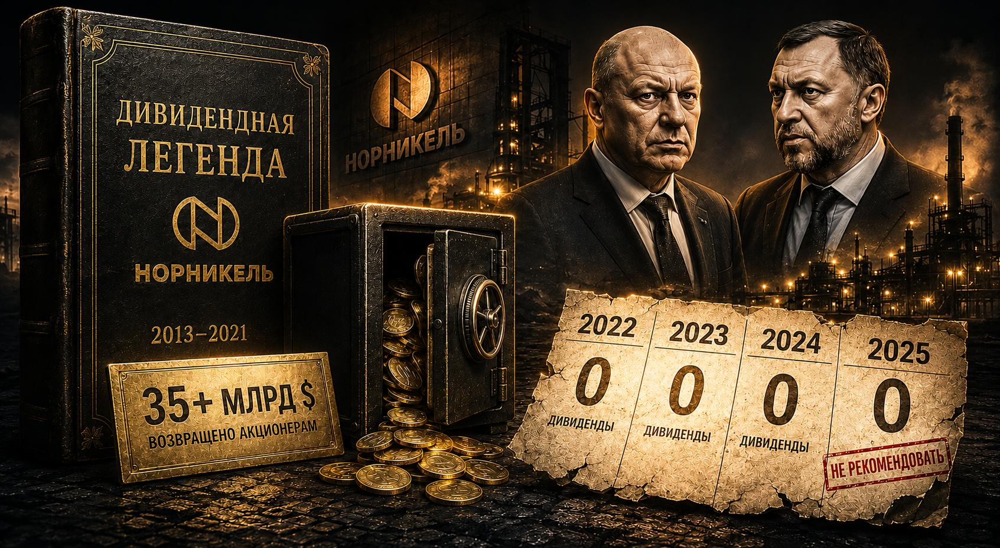
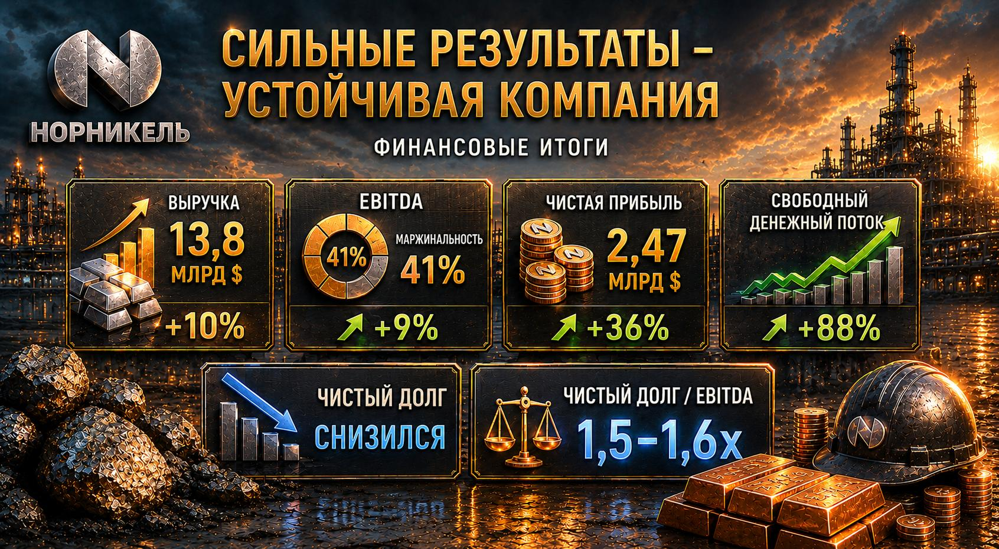
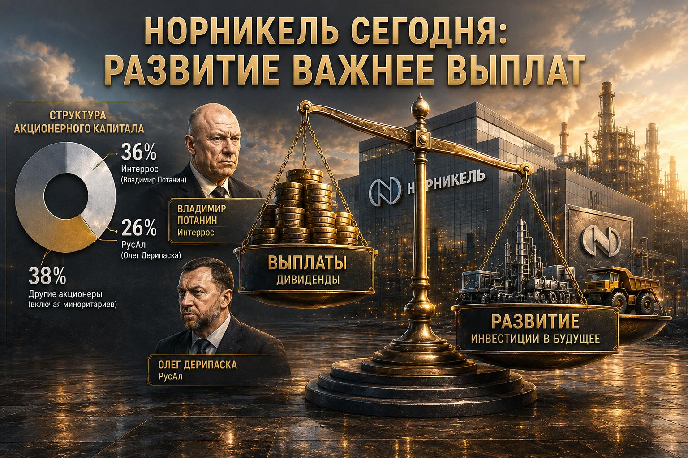

🤍 Норникель снова не заплатил. И это самая интересная история мая 2026
25 мая совет директоров Норникеля собрался и в третий раз подряд произнёс одно короткое слово. Нет.
И вы уже знаете: Норникель для меня — одна из самых любимых бумаг на нашем рынке. Я её беру, держу и возвращаюсь к ней снова и снова, потому что во всём мире нет второй такой компании по никелю и палладию. Это уникальный актив, и в долгую с ним очень тяжело расстаться.
Но именно сегодня я хочу поговорить о том, как у меня самой изменилась стратегия по этой бумаге. Потому что то, что происходит, — это не просто «опять не заплатили». Это история, в которой каждая глава интереснее предыдущей.

Глава первая. Сказка, в которую мы все когда-то поверили
Была на российском рынке бумага-легенда. С 2013 по 2023, пока между Потаниным и Дерипаской действовало то самое акционерное соглашение, Норникель вернул акционерам больше 35 миллиардов долларов с учётом обратного выкупа. Тридцать пять миллиардов.
Люди покупали эту бумагу не на интерес и не на спекуляцию — её брали под идею получать дивиденды. Как квартиру для сдачи, только без жильцов, ремонта и соседей с дрелью. А потом, как и положено в хорошем романе, сказка закончилась ровно тогда, когда никто этого не ждал.
Глава вторая. Три года тишины
- 2022 — впервые за 14 лет компания не заплатила вообще ничего.
- 2023 — только промежуточные дивиденды за девять месяцев.
- 2024 — снова ноль.
- 2025 — решение принимали на днях, и снова рекомендация воздержаться.
Три года подряд пусто. Для бумаги, которую люди годами покупали как дивидендную, это не эпизод. Это измена.
Глава третья. От которой закипает кровь
Если бы компания загибалась — было бы честно, не до дивидендов. Но вся интрига в цифрах за 2025, за который мы ждали выплат.

Запомните цифру 1,5х — она сейчас выстрелит. По действующей дивполитике выплаты привязаны к долгу: если чистый долг к EBITDA ниже 1,8х — ориентир 60% от EBITDA; если выше 2,2х — 30%. Долг сейчас 1,5х. То есть формально компания в той самой зоне, где могла бы направить на дивиденды до 60% EBITDA. Пространство есть. Деньги есть. А выплат — примерно 7,5 ₽ на акцию — нет.
Вот это и есть та заноза, из-за которой акционеры сидят в недоумении.
Глава четвёртая. Разворот сюжета: дело вообще не в деньгах

- Причина первая — это про двух людей. В Норникеле два крупных хозяина: 36% у «Интерроса» Владимира Потанина и 26% у «РусАла» Олега Дерипаски. Дерипаске дивиденды нужны как воздух — деньгами от Норникеля «РусАл» традиционно гасил собственные долги, поэтому он всегда давил за максимальные выплаты. Потанин годами стоял на другом: прибыль надо вкладывать в развитие. В 2023 соглашение между ними закончилось — и пока они не договорятся о новых условиях, денег, похоже, не будет.
- Причина вторая — менеджмент осознанно выбрал устойчивость. Снижение долга при высоком ключе, инвестиции в себя, новая инвестпрограмма — в таких условиях лучше держать кубышку целой.
- Причина третья, о которой почти не говорят, — Быстринский ГОК. В этой «дочке» сидят миноритарии (структуры Потанина и китайский фонд Hopu). Норникель обязан сначала разруливать выплаты внутри этой конструкции, а уже потом всё идёт наверх.
Глава пятая, и она же самая важная
Норникель сегодня — совсем не дивидендная история. Это компания, которая решила пожить для себя.
В долгую это всё ещё уникальный мировой актив, который один в мире делает то, что делает. Но моя стратегия серьёзно меняется — и я это от вас прятать не буду.
А что вы будете делать с Норникелем?
Такие разборы и смену стратегий мы обсуждаем в комьюнити и на занятиях Академии — по шагам и без паники.
В комьюнити →Не является индивидуальной инвестиционной рекомендацией. 16+